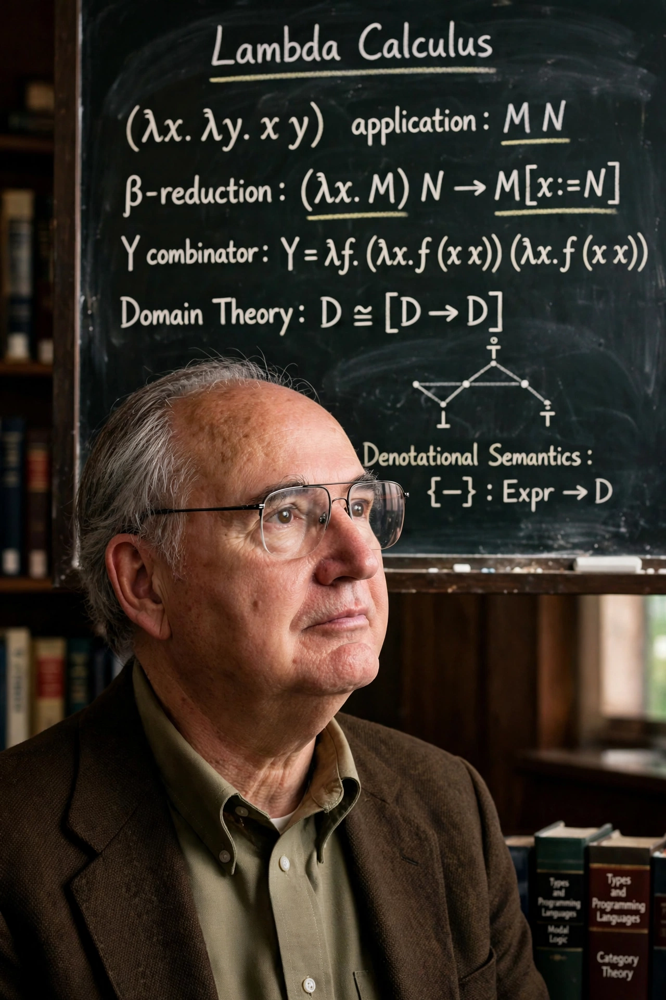

| Born | October 11, 1932 Berkeley, California, U.S. |
|---|---|
| Alma mater | University of California, Berkeley; Princeton University |
| Known for | Domain theory; denotational semantics; Scott topology; automata theory with Michael Rabin |
| Awards | Turing Award (1976) |
| Fields | Computer science, mathematical logic |
| Institutions | Carnegie Mellon University; University of Oxford |
| Doctoral advisor | Alonzo Church |
Dana Stewart Scott (born October 11, 1932) is an American logician and computer scientist who won the ACM Turing Award in 1976, jointly with Michael O. Rabin, for their work on automata theory — in particular the introduction of nondeterministic finite automata and the powerset construction in their 1959 paper "Finite Automata and Their Decision Problems."
Scott earned his PhD at Princeton in 1958 under Alonzo Church. Around 1969, working at Oxford, he created domain theory, the first mathematical model of the untyped lambda calculus, which founded the field of denotational semantics for programming languages — giving rigorous mathematical meanings to programs, including those in languages descending from Lisp. He also made major contributions to modal logic (with John Lemmon), set theory (showing, with Solovay, consequences of measurable cardinals via Boolean-valued models), and the Scott topology in topology.
Scott taught at Stanford, Oxford, and for many years at Carnegie Mellon University, where he was Hillman University Professor; he is now emeritus.
Categories: 1932 births | Living people | Turing Award laureates | American computer scientists